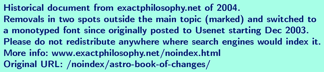

Welcome to my "Book of Changes"
This book presents a new view at Western tropical
astrology, a more simple and analytical point of view.
It reconnects to the philosophical views of ancient
Greece and of ancient China, which were very concrete
-- since they talked about things like rivers, trees,
clouds, mountains, etc. -- but at the same time also
very abstract -- categorizing the world into hot/cold,
dry/wet, light/dark, yin/yang etc.
Although this is not directly a text for beginners,
it can be useful to get an idea of the main properties
of the twelve signs of the zodiac, if it is paired with
another introductory text (or texts). But, despite its
simplicity, the new approach presented here is also
astonishingly rich and deep in content, making it a
beautiful tool for professional astrologers to explore
many things from a new, more structured point of view.
Finally, the simple structure of the new approach is
also something that makes it suitable for formal and
quantitative scientific tests of astrology.
This book is at the moment emerging in posts to the
newsgroup alt.astrology.tropical, to be put up here
a bit later, piece by piece (and translated to German).
If you are new to astrology, the links at the bottom
of this page might be helpful too.
What follows is maybe not best accessed by trying to
grasp things too quickly, but rather by letting go,
by imagining the trees, mountains, fires, houses, etc.
and allowing things to grow naturally in the mind
-- very much in the style of the Tao Te Ching...
Book of Changes
Hi everybody,
With this post I would like to start writing a book.
First concrete posts will be about my view of the
signs as changes between elements, concretely first
Aries as a fire that is starting to burn.
That view is based on Aristotle's view of the world
composed of two opposites -- hot/cold and dry/wet --
that combine in four ways -- Fire/Air/Water/Earth
and can be changed into each other. It is also very
similar to the "I Ching", the Chinese book of changes
that has 8 "Elements" that transform into each other.
Other chapters will follow, say maybe "Houses by
Numbers", "Nodes as Gates" or others.
Alain Stalder
http://www.exactphilosophy.net
* 1966-08-07 04:12 Zürich 03:12 UTC
[Omitted in this archive copy: Quote of chapter 66
of the Tao Te Ching in Legge's translation]
Signs by Elements
The four elements go in a cycle. Fire goes up
from earth into air -- that is also spring.
Air is the cloud that balances in the air,
receives water from the sea and lets it rain
down again, receives and emits lightning (fire)
from and to the ground (earth) -- summer. Water
falls and flows down as rain and rivers to the
ground and into the sea -- autumn. The earth is
usually resting calmly -- winter -- steadily
releasing water in the mountains and eruptively
creating fire from volcanoes and burning plants.
Abstractly, fire that Aristotle viewed as dry
and hot becomes wet (air), then cold (water),
dry again (earth) and finally hot (fire) again.
Aristotle had the seasons assigned differently
than me, but my approach as a physicist is to
come from observation of people and nature
again, and to find the best fit, hopefully also
profiting from the insights that the world has
gained -- also through suffering -- during the
previous 2000 years in the age of Pisces.
Each of the three signs of each element is a stage
in a transition -- young to adult to old.
A fire starts burning wood (earth, Aries), then
steadily transforms wood into smoke (air, Leo),
ending its life mainly as smoke and imagination
(Sagittarius).
Air is a cloud that first emits lots of lightning
(fire, Gemini), then rain starts (balance between
fire and water, Libra), and finally rain alone is
equally distributed over everybody (Aquarius).
Water is first a spring that erupts up in the
mountains (earth, Cancer), mixes with other waters
into a stream (Scorpio) and finally flows into the
sea where it again evaporates (air, Pisces).
Earth is a tree that has beautiful flowers in the
sun (fire, Taurus), but also needs water from below
to feed it through its roots that keep it also from
falling down (water, Capricorn), both to be balanced
in the middle, adult earth sign -- Virgo.
Basic Opposites
Before I describe the elements, a dictionary of
the basic opposites is necessary.
Hot/cold corresponds to day/night, because during
the day it is warmer than during the night. Day/night
corresponds to light/dark (obviously), active/passive
and conscious/unconscious, because people are awake
during the day and sleep at night. The hot elements
either rise (fire) or are up (air), the cold ones
either flow down (water) or are below (earth).
Men were traditionally "on top" during sex, as well
as more active -- for the part of sex that is needed
for reproduction, the latter is even naturally so.
Hence hot/cold corresponds to male/female.
The female elements are heavier than the male ones,
thus hot/cold corresponds to light/heavy.
Dry/wet corresponds to hard/soft, brittle/malleable,
fine/coarse. The inside of many things is wetter than
the outside, hence dry/wet corresponds to out/in.
This has more profound consequences, to be exposed later.
All four elements transform from dry via a balance
between dry and wet to wet -- fire and water go from
earth to air, air and earth go from fire to water.
Hence dry/wet corresponds to young/old.
Before birth, the world is wet, soft and warm. Thus
the experience of the opposites hot/cold and dry/wet
(=soft/hard=in/out) is one of the first experiences
that a newborn child makes. This can surely be called
an elementary experience -- according to Aristotle,
elements are what one can touch.
The elements can also be opposed in another pair,
air+earth/fire+water, corresponding (obviously) to
rest/move, but also describing an independent and
additional property of anything that can be touched
-- the ability to rest or move -- also since both
sides contain dry+wet+hot+cold, thus are complete.
This is beautifully reflected in the I Ching, where
all elements appear both in resting and moving form:
fire: fire - thunder (lightning)
air: heaven - wind/wood (blow/grow)
water: lake - water (flowing river)
earth: mountain - earth (yielding)
Air
A cloud rests above in the sky, yet air is male,
hence active: The cloud must constantly communicate,
receives water from below through the power of the
sun (fire) and rains down water. Lightning goes from
one electical pole to another, either down from the
cloud, up to it or within it. In any case, lightning
re-balances electrical charge.
A cloud oversees the earth below it like no other
element -- air has an objective view on reality.
But one thing that air cannot not see well, is itself
(air is invisible). Pure logic (mathematics) cannot be
proven by logic alone (i.e. mathematically) to be free
of contradictions. In any logical construct of more
than trivial size, there are statements that can be
either true or false, but undecidable within the system.
Air can communicate and store information about the
other elements more objectively than any other element,
but it cannot replace them. "750nm wavelength" is not
the same as the experience of the color "red". A theory
of everthing would still not be the same as everything,
and it would not be provable that the theory would be
complete and free of contradictions. (This very text is
also prone to such critisism -- after all, it tries to
describe all four elements by words).
So there is communication, balance, overview,
objectivity -- but also problems with subjectivity
(self-reference) -- from a simple image (of a cloud)
that everybody can reproduce in their imagination
from the few words that are communicated in this text.
Aries
Any description of a star sign is incomplete.
I hope, however, to convey some of the richness
that lays within the elementary approach and
which -- with some practice -- is well within
reach for everybody.
Aries is a young fire, one that just starts to
burn and fights to grow up. There is lots of wood
(earth) to be transformed into smoke (air), yet.
Still, the importance of the air in "Air"-ies
is not to be underestimated -- fire needs both
matter and air to burn.
First earth. An newborn child only has a body (earth),
but no knowledge (air) yet. A kid argues based on
immedatiate reality -- "I am hungry", "I am cold",
ignoring larger scale connections. But the strive
is up into the air, towards more knowledge.
Air provides a more gentle angle. One needs to blow
strongly to turn embers into a flame. Once there is
a little flame, it has to be protected from too much
wind and gently guided by air towards more wood so
that it can grow.
Unlike for the older fire signs, Leo and Sagittarius,
the wound that is caused by the burning and hence
disappearing wood (earth, body) is not yet causing
much pain, only maybe some impulse to act.
So there is a fight up towards higher goals, insights
and knowledge (air), and a drive to protect the weak.
Aries-Pisces
A look at the origins of the gentleness of air
that guides the young flame in Aries...
Pisces, the old air sign, is the ocean that
contains all streams of the world that have flown
into it. So it contains the knowledge of all
individual strands of fate. Pisces is also the
third phase of water (ice-water-vapour), so by
evaporation, it clarifies (vapour is invisible)
and expands the knowledge about human nature.
It is this air that is creating, driving and
guiding the young flame towards new places where
new things need to be created. So, even though
Aries argues usually based on immediately
verifiable reality (earth), where he is heading
is a more subtle affair of which he is typically
not fully consciously aware -- how could he be,
he is far yet from understanding the complexity
of nature, almost a year away.
I Ching
The 64 hexagrams of the I Ching are composed
of yin and yang lines -- ':' and 'I' -- the
broken yin line is female, the unbroken yang
line is male.
The four seasons are assigned as follows (left
corresponds to up in usual horizontal notation):
:I spring
II summer
I: autumn
:: winter
This corresponds to the assignment spring-fire,
summer-air, autumn-water, earth-winter if the
first line is identified with dry/wet (yin=dry)
and the second line with hot/cold (yin=cold).
The four elements come in both yin and yang forms,
resting and moving:
I:I fire, light-giving, 2nd daughter -- resting fire
::I thunder, inciting/movement, 1st son -- moving fire
III heaven, strong, father -- resting air
II: wind/wood, penetrating, 1st daughter -- moving air
:II lake/mist, joyful, 3rd daughter -- resting water
:I: water, dangerous, 2nd son -- moving water
I:: mountain, resting, 3rd son -- resting earth
::: earth, devoted/yielding, mother -- moving earth
Removing the differing line in each pair (move=yin)
yields again the above relation between seasons and
elements (only almost: ':I' emerges twice, for fire
and water, only if the order of lines is switched
for water to 'I:' is the fit perfect).
The hexagrams let the 8 elements meet in 64 ways,
with one above and one below.
Reflection
Language is a cultural mirror of nature. What is
close in language, is often also close in nature.
The meaning of any thing is maybe best understood
by the structure of all associations to its word.
Houses by Numbers
An astrological house is defined by two words,
the word "house" and its number. The idea is
now that the meaning of a particular house is
defined mainly by the structure of associations
to these two words. My ignorance of the meanings
of houses -- not being a professional astrologer
I hardly know the birth time of anybody I know
in person -- allows me maybe best to explore
this idea with minimal bias.
Different languages have different words for an
astrological house (e.g. field, templum), but it
is always a confined space.
The numbers 1 to 4 represent the elements in the
order fire-air-water-earth. The number 5 stands
for what transforms them into each other. Then
6-9 stand for the four possible transitions:
air: fire-air-water = 1+2+3 = 6
fire: earth-fire-air = 4+1+2 = 7
earth: fire-earth-water = 1+4+3 = 8
water: earth-water-air = 4+3+2 = 9
Houses are confined spaces. Of the four elements,
only earth is confined, but air is not, and fire
and water are only little confined. The axes of
AC/DC and MC/IC form a cross, an abstract symbol
for a tree and having 4 arms, thus related to earth.
Hence houses are earthy.
The 4th house cusp (IC) is at the root of the tree,
thus related to Capricorn, because it is the last
phase in the transition fire-earth-water, symbolized
by the roots of a tree that feed it with water and
keep it from falling down.
The 10th house cusp (MC), in turn, represents the
fruits of the tree, and is hence related to Taurus,
the young earth sign, made mainly of fire, symbolizing
the leaves, flowers and fruits that grow with the
energy of the sun (fire). And there is a relation
to the 10th planet, Pluto.
So the axis 4/10 is related to roots (parents and
ancestors) and the fruits (children) emerging from
them and to fate.
MC and IC rest (air and earth), AC and DC move
(fire and water). Thus the axis MC/IC is about
what is essentially preserved from previous
generations (actively for the MC and passively
for the IC), the axis AC/DC is what can be
changed by the individual (actively for the AC
and passively for the DC).
Divisions
The zodiac can be divided by various numbers that
relate to the symbolism of the number.
1 - life, year
2 - create/consolidate (plants in nature)
3 - ages (young/adult/old), subdivided into the four elements (fire-earth-air-water)
4 - seasons (fire-air-water-earth), subdivided into characters (cardinal/fixed/mutable)
6 - sex (male/female)
12 - signs
Adults are essentially defined by their fertility, the
ability to create offspring, deepening the relation of
the number 3 to fate.
Dry elements come before wet ones. Hence Aries+Taurus
are younger children than Gemini+Cancer, Leo+Virgo are
younger adults than Libra+Scorpio, Sagittarius+Capricorn
are younger old people than Aquarius+Pisces.
Sex is related to 6 and hence to the transformation of
air -- and thus maybe most strongly to Libra (middle,
adult, balancing air sign) -- and to Jupiter.
A day can also be divided into parts:
2 - create/consolidate (day/night)
4 - morning-afternoon-evening-night and thus
sunrise-noon-sunset-midnight (AC-MC-DC-IC)
Aspects and Planets
1 - conjunction/sun
The ideas and goals of the involved planets have to
be fused into a single entity.
2 - opposition/moon
The moon reflects the light of the sun -- reflection
turns 1 into 2. The conscious light of the sun --
the conscious self -- is confronted with unconscious,
maybe more archaic parts of itself, that are often
projected outside while the conflict is maybe rather
an internal one (1-fire is dry, hence external, but
2-air is wet, hence internal).
3 - trine/Venus
The goddess of love spreads beauty and harmony and can
thus afford to remain externally passive (3-water is wet,
internal, fine) and let others act to please her.
4 - square/Mars
The god of war creates conflict, moves and makes changes
in the outside world (4-earth is dry, external, rough).
5 - quintile/Mercury
6 - sextile/Jupiter
Planets and Relations
Different planets are associated with different
relationships. Mars and Venus are associated with
lovers, sun and moon with father and mother, etc.
This rises the question whether in the relation
between two people, different planets would play
a stronger role than others -- depending on the
exact type of their relation.
For example, the question is whether the mother's
moon would more strongly influence her relation
to her child than her other planets. Conversely,
the question is also whether the moon of a child
would more strongly influence the relation to
the mother than any other planet. Both questions
are difficult to answer with certainty, because
the aspects between mother's and child's planets
would likely skew the picture in most cases.
Also, one would expect the moon to play a similar
role if one person is not an actual mother, but
in a maternal role, like a teacher, boss, aunt.
Here are planets and proposed relations:
sun: as/towards father
moon: as/towards mother
Venus: as/towards man
Mars: as/towards woman
Mercury: as/towards sibling
Jupiter: as/towards grandfather
Saturn: as/towards grandmother
Sun and moon cross one generation, Jupiter and
Saturn two, Venus, Mars and Mercury none. Mars
and Venus also specifically apply to male/female
lovers and friends. Mercury applies also to
rivals for the same person or thing (just like
siblings are rivals for the love of the parents).
Depending on the situation, the same two people
might be lovers, rivals or teacher/pupil, etc.,
which would lead to different behaviour. That such
changed behaviour occurs, is a common experience,
although it remains open in which way exactly.
Relations between grandmother or grandfather and
grandchildren are often more relaxed than from any
of them to their children resp. parents. From the
above that would be somewhat understandable, since
grandfather and grandchild would preceive their
son/father in the same way (the sun sign) and the
same could be said about grandmother, grandchild
and their perception of their daughter/mother.
The common "issue" would likely create a bond.
Lunar Nodes
The nodes are mysterious, almost anything can
be associated with them. They symbolize the flow
between any opposites, like on a Moebius tape,
in the number 8 or in infinity. Or yin/yang.
Woman: Do you think if I reincarnate that I might
come back as a cow in my next life?
Man: No, one does not come back as something that
one has been before.
There is a deep truth hidden in that joke: A cow
eats grass and "produces" dung. Dung is very
fertile, but one cannot directly grow a cow from
dung, only indirectly by growing grass that can
then again feed young cows. That is why what can
grow from the southern node (anus) cannot be like
its sign or house, but must be more like the sign
and house of the northern node.
Some analytical attempts and why they appear not
to reveal much about the nodes themselves:
The lunar nodes are the two spots where the lunar
path meets the path of the sun and also roughly of
most other planets. Thus the nodes are lunar. Also
the nodes are places where two things meet, hence
they are about the numbers 1 and 2. At birth, the
unit of mother and child becomes two individuals.
For the child, that sudden experience of opposites
(soft/hard, wet/dry, hot/cold, in/out, me/world)
becomes deeply connected to the mother. Hence the
connection between 2 and moon.
But does the above really say much about the nodes?
Is not more so that it says some things about moon,
mother, the number 2, the 2nd house, etc.? There
are similar ways in which the nodes can be connected
to the father: The child recognizes in the father
a part of him-/herself that was there before birth
and is now still there. That restores some hopes
into a continuity (unity, 1) of the world, into a
reliable unity between 2 people. Or take the cow and
the grass above -- the energy that makes that cycle
work is ultimately the light of the sun that drives
the photosynthesis in the grass. But does that not
again rather say something about father, sun, the
numbers 1 and 2 than about the nodes?
The nodes are seen as mouth and anus of a celestial
dragon that consists of 8 parts. The symbolism of
the number 8 leads to the transformation of earth
(fire-earth-water: 1+4+3=8), to Uranus, the symbol
for infinity, which ressembles a sketch of a fish,
which leads to the two perpendicular fish in the
constellation of Pisces, forming an 8x8 matrix
(mother), related to chess and the I Ching etc.
But does that mean that nodes are only about the
transformation of the element earth? Not really,
because people also drink (water), breathe (air)
and food contains energy (fire). And they do not
only produce earth, but also speak (air) etc.
In essence, the nodes are no things, they do not
have any attributes. Twisting things around --
like a Moebius tape -- anything that comes into
contact with the nodes is transformed and related
in interesting and deep ways to other things.
Web Links
[Omitted in this archive copy: Web links]